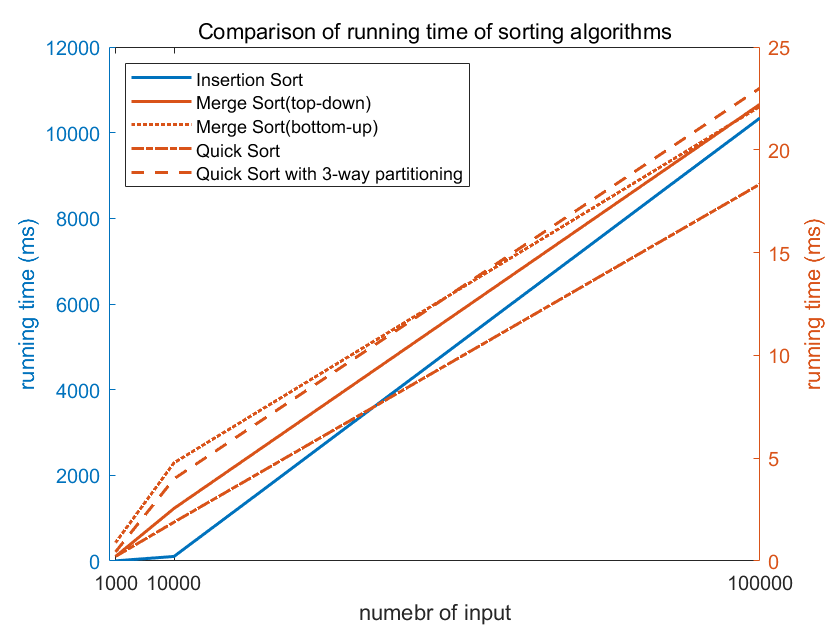
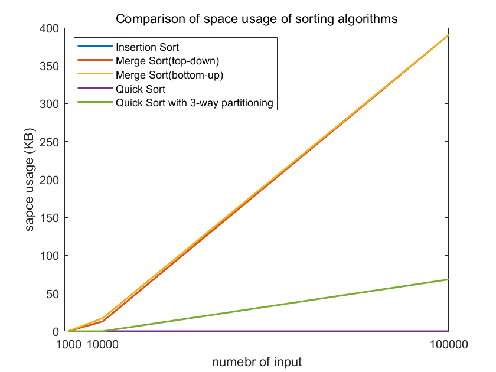

几种排序算法的实验性能比较
实现插入排序（Insertion Sort），自顶向下归并排序（Top-down Mergesort），自底向上归并排序（Bottom-up Mergesort），随机快速排序（Random Quicksort），Dijkstra 3-路划分快速排序（Quicksort with Dijkstra 3-way Partitioning）。对不同输入规模的数据进行实验，对比上述排序算法的时间及空间占用性能。
我的计算机：
- CPU：Intel® Core™ i5-8265U CPU @ 1.60GHz × 8
- OS：Ubuntu 20.04.1 LTS, 64位
运行时间
计算方法：在算法前后分别使用一次Java库函数System.currentTimeMillis()得到startTime和endTime，然后endTime - startTime即可。
表格形式
Comparison of running time of sorting algorithms (in Micro Seconds)
| N=1000 | Run1 | Run2 | Run3 | Run4 | Run5 | Run6 | Run7 | Run8 | Run9 | Run10 | Average |
|---|---|---|---|---|---|---|---|---|---|---|---|
| InsertionSort | 9 | 9 | 1 | 1 | 2 | 1 | 1 | 1 | 1 | 1 | 2.89 |
| MergeSort(top-down) | 1 | 0 | 0 | 0 | 0 | 0 | 1 | 0 | 0 | 0 | 0.22 |
| MergeSort(bottom-up) | 2 | 1 | 1 | 1 | 1 | 1 | 0 | 0 | 1 | 1 | 0.89 |
| QuickSort | 1 | 0 | 0 | 0 | 0 | 0 | 0 | 1 | 0 | 0 | 0.22 |
| QuickSort with 3-way partitioning | 1 | 1 | 0 | 0 | 1 | 0 | 1 | 0 | 0 | 0 | 0.44 |
| N=10000 | Run1 | Run2 | Run3 | Run4 | Run5 | Run6 | Run7 | Run8 | Run9 | Run10 | Average |
|---|---|---|---|---|---|---|---|---|---|---|---|
| InsertionSort | 189 | 169 | 92 | 103 | 84 | 79 | 80 | 83 | 79 | 78 | 106.44 |
| MergeSort(top-down) | 6 | 3 | 3 | 3 | 3 | 1 | 1 | 1 | 2 | 1 | 2.56 |
| MergeSort(bottom-up) | 5 | 9 | 12 | 8 | 1 | 2 | 2 | 2 | 2 | 1 | 4.78 |
| QuickSort | 5 | 3 | 1 | 2 | 1 | 2 | 1 | 1 | 1 | 2 | 1.89 |
| QuickSort with 3-way partitioning | 5 | 15 | 5 | 1 | 2 | 2 | 2 | 2 | 2 | 1 | 4 |
| N=100000 | Run1 | Run2 | Run3 | Run4 | Run5 | Run6 | Run7 | Run8 | Run9 | Run10 | Average |
|---|---|---|---|---|---|---|---|---|---|---|---|
| InsertionSort | 11956 | 12658 | 9770 | 9763 | 9808 | 9803 | 9755 | 9762 | 9820 | 9822 | 10343.89 |
| MergeSort(top-down) | 53 | 29 | 16 | 16 | 17 | 20 | 17 | 16 | 16 | 17 | 22.22 |
| MergeSort(bottom-up) | 59 | 19 | 17 | 17 | 17 | 18 | 18 | 17 | 17 | 17 | 22.11 |
| QuickSort | 38 | 20 | 16 | 15 | 15 | 15 | 15 | 16 | 15 | 15 | 18.33 |
| QuickSort with 3-way partitioning | 43 | 22 | 20 | 21 | 20 | 20 | 21 | 20 | 20 | 20 | 23.00 |
折线图形式

内存占用
计算方法：在算法前后分别使用一次Java库函数Runtime.getRuntime().totalMemory() - Runtime.getRuntime().freeMemory()得到startSpace和endSpace，然后endSpace - startSpace即可。注：因为Java有垃圾回收机制，这一方法也许并不十分准确，但是用于比较算法，这一方法还是能给出大致的结果。
表格形式
Comparison of space usage of algorithms (in Kilo Bytes)
| N=1000 | Run1 | Run2 | Run3 | Run4 | Run5 | Run6 | Run7 | Run8 | Run9 | Run10 | Average |
|---|---|---|---|---|---|---|---|---|---|---|---|
| InsertionSort | 0 | 0 | 0 | 0 | 0 | 0 | 0 | 0 | 0 | 0 | 0 |
| MergeSort(top-down) | 0 | 0 | 0 | 0 | 0 | 0 | 0 | 0 | 0 | 0 | 0 |
| MergeSort(bottom-up) | 0 | 0 | 0 | 0 | 0 | 0 | 0 | 0 | 0 | 0 | 0 |
| QuickSort | 0 | 0 | 0 | 0 | 0 | 0 | 0 | 0 | 0 | 0 | 0 |
| QuickSort with 3-way partitioning | 0 | 0 | 0 | 0 | 0 | 0 | 0 | 0 | 0 | 0 | 0 |
| N=10000 | Run1 | Run2 | Run3 | Run4 | Run5 | Run6 | Run7 | Run8 | Run9 | Run10 | Average |
|---|---|---|---|---|---|---|---|---|---|---|---|
| InsertionSort | 0 | 0 | 0 | 0 | 0 | 0 | 0 | 0 | 0 | 0 | 0 |
| MergeSort(top-down) | 0 | 39.08 | 0 | 0 | 0 | 0 | 39.08 | 0 | 39.08 | 0 | 13.03 |
| MergeSort(bottom-up) | 0 | 39.08 | 0 | 0 | 39.08 | 0 | 39.08 | 0 | 39.08 | 0 | 17.37 |
| QuickSort | 0 | 0 | 0 | 0 | 0 | 0 | 0 | 0 | 0 | 0 | 0 |
| QuickSort with 3-way partitioning | 0 | 0 | 0 | 0 | 0 | 0 | 0 | 0 | 0 | 0 | 0 |
| N=100000 | Run1 | Run2 | Run3 | Run4 | Run5 | Run6 | Run7 | Run8 | Run9 | Run10 | Average |
|---|---|---|---|---|---|---|---|---|---|---|---|
| InsertionSort | 0 | 0 | 0 | 0 | 0 | 0 | 0 | 0 | 0 | 0 | 0 |
| MergeSort(top-down) | 390.64 | 390.64 | 390.64 | 390.64 | 390.64 | 390.64 | 390.64 | 390.64 | 390.64 | 390.64 | 390.64 |
| MergeSort(bottom-up) | 390.64 | 390.64 | 390.64 | 390.64 | 390.64 | 390.64 | 390.64 | 390.64 | 390.64 | 390.64 | 390.64 |
| QuickSort | 0 | 0 | 0 | 0 | 0 | 0 | 0 | 0 | 0 | 0 | 0 |
| QuickSort with 3-way partitioning | 0 | 614.41 | 0 | 0 | 0 | 0 | 0 | 0 | 0 | 0 | 68.27 |
折线图形式

参考
How to measure the memory usage of data mining algorithms in Java?
本博客所有文章除特别声明外，均采用 CC BY-SA 4.0 协议 ，转载请注明出处！